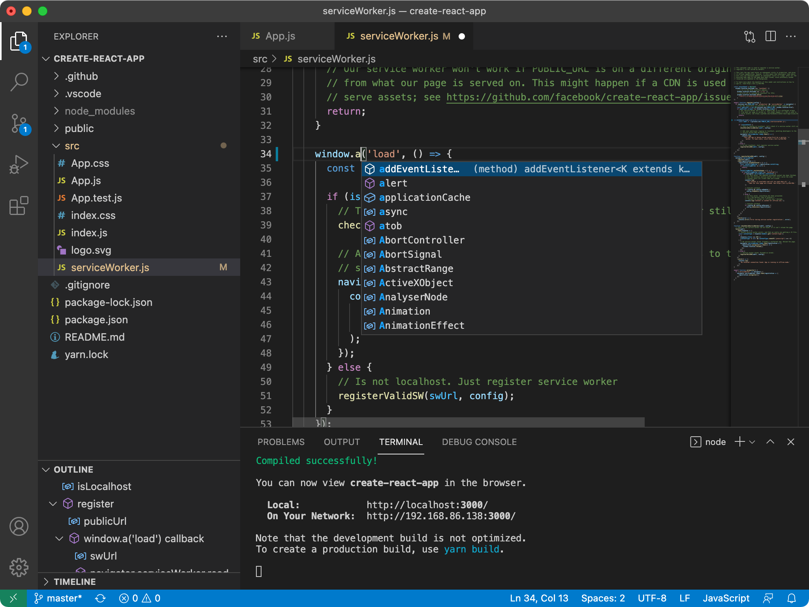

The Repository
This repository ("Code - OSS") is where we (Microsoft) develop the Visual Studio Code product together with the community. Not only do we work on code and issues here, but we also publish our roadmap, monthly iteration plans, and our endgame plans. This source code is available to everyone under the standard MIT license.
Visual Studio Code

Visual Studio Code is a distribution of the Code - OSS repository with Microsoft-specific customizations released under a traditional Microsoft product license.
Visual Studio Code combines the simplicity of a code editor with what developers need for their core edit-build-debug cycle. It provides comprehensive code editing, navigation, and understanding support along with lightweight debugging, a rich extensibility model, and lightweight integration with existing tools.
Visual Studio Code is updated monthly with new features and bug fixes. You can download it for Windows, macOS, and Linux on Visual Studio Code's website. To get the latest releases every day, install the Insiders build.
Contributing
There are many ways in which you can participate in this project, for example:
- Submit bugs and feature requests, and help us verify as they are checked in
- Review source code changes
- Review the documentation and make pull requests for anything from typos to new content.
If you are interested in fixing issues and contributing directly to the code base, please see the document How to Contribute, which covers the following:
Feedback
- Ask a question on Stack Overflow
- Request a new feature
- Upvote popular feature requests
- File an issue
- Connect with the extension author community on GitHub Discussions or Slack
- Follow @code and let us know what you think!
See our wiki for a description of each of these channels and information on some other available community-driven channels.
Related Projects
Many of the core components and extensions to VS Code live in their own repositories on GitHub. For example, the node debug adapter and the mono debug adapter repositories are separate from each other. For a complete list, please visit the Related Projects page on our wiki.
Bundled Extensions
VS Code includes a set of built-in extensions located in the extensions folder, including grammars and snippets for many languages. Extensions that provide rich language support (inline suggestions, Go to Definition) for a language have the suffix language-features. For example, the json extension provides coloring for JSON and the json-language-features extension provides rich language support for JSON.
Development Container
This repository includes a Visual Studio Code Dev Containers / GitHub Codespaces development container.
- For Dev Containers, use the Dev Containers: Clone Repository in Container Volume... command which creates a Docker volume for better disk I/O on macOS and Windows.
- If you already have VS Code and Docker installed, you can also click here to get started. This will cause VS Code to automatically install the Dev Containers extension if needed, clone the source code into a container volume, and spin up a dev container for use.
- For Codespaces, install the GitHub Codespaces extension in VS Code, and use the Codespaces: Create New Codespace command.
Docker / the Codespace should have at least 4 cores and 6 GB of RAM (8 GB recommended) to run a full build. See the development container README for more information.
Code of Conduct
This project has adopted the Microsoft Open Source Code of Conduct. For more information see the Code of Conduct FAQ or contact opencode@microsoft.com with any additional questions or comments.